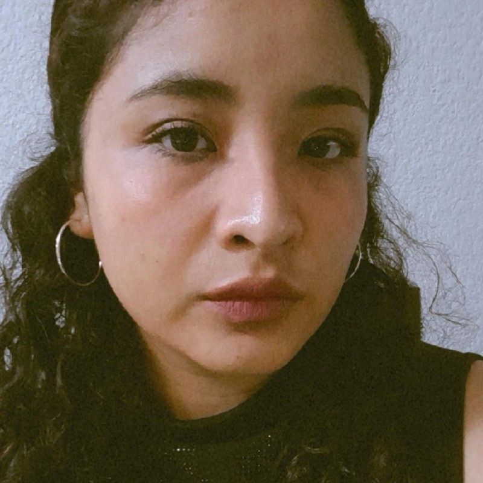

🔎
Observar
Motivar a las personas a prestar atención a los organismos que encuentran en su casa, jardín, escuela, parque o durante sus actividades cotidianas.
DESCUBRE NUESTRO EQUIPO Y MISIÓN
Biodiversidad, tecnología y comunidad
InstaRama es una red social visual y educativa enfocada en acercar el conocimiento de la biodiversidad al público general de una manera sencilla, participativa y accesible.
La plataforma busca que las personas puedan compartir fotografías de los organismos que encuentran en su vida cotidiana, registrar sus observaciones, interactuar con otros usuarios y aprender más sobre los seres vivos que forman parte de su entorno.
InstaRama nace de la idea de transformar la curiosidad cotidiana por la naturaleza en una oportunidad para observar, registrar, compartir y aprender.
Motivar a las personas a prestar atención a los organismos que encuentran en su casa, jardín, escuela, parque o durante sus actividades cotidianas.
Permitir que los usuarios compartan fotografías, descripciones y observaciones, creando un registro personal de los organismos que han encontrado.
Fomentar la curiosidad, el intercambio de conocimientos y el interés por conocer, valorar y conservar la biodiversidad que nos rodea.
Crear una comunidad digital accesible donde las personas puedan observar, registrar y compartir la biodiversidad que encuentran en su entorno, fomentando la curiosidad, el aprendizaje y el interés por la conservación de los seres vivos mediante el uso de la tecnología.
Ser una plataforma digital que acerque el conocimiento de la biodiversidad al público general, formando una comunidad participativa interesada en observar, conocer y valorar los seres vivos de su entorno.
Observar, registrar, compartir y aprender.
Conocer nuestro entorno.
Compartir ideas y conocimientos.
Aprender mediante la observación.
Valorar y cuidar la biodiversidad.
Hacia las personas y los seres vivos.
Compartir información de forma responsable.
Proteger los datos de nuestra comunidad.
Sobre nosotros En InstaRama, creemos que no necesitas ser biólogo para maravillarte con la naturaleza ni para contribuir a su cuidado. Cada día cruzamos camino con formas de vida fascinantes: una ave en el parque, un hongo tras la lluvia o un insecto en el jardín. InstaRama nace precisamente para transformar esas pequeñas curiosidades cotidianas en momentos de aprendizaje y conexión. Somos una plataforma digital y comunidad accesible donde cualquier persona —sin importar su nivel de conocimientos— puede observar, registrar, compartir y aprender sobre la biodiversidad que la rodea. Queremos que cada fotografía que tomes se convierta en una oportunidad para descubrir qué especie te acompaña, comprender su importancia en el ecosistema y motivarte a protegerla.
¿Por qué lo hacemos?
El planeta enfrenta grandes retos de conservación, y estamos
convencidos de que el primer paso para cuidar la naturaleza es
conocerla. A través de una experiencia social e interactiva,
buscamos acercar la ciencia a tu vida diaria, ayudarte a llevar un
registro personal de tus hallazgos y conectarte con una comunidad
que comparte tu misma curiosidad por el entorno.
¡Hola! Soy Víctor Adrián Beltrán, desarrollador Java Full Stack e Ingeniero. Combinando mi interés por la tecnología, los datos y la naturaleza, creé InstaRama: una plataforma social y educativa pensada para conectar a entusiastas de la biología, facilitar el aprendizaje de la biodiversidad y compartir el conocimiento científico de forma accesible e interactiva.
¡Hola! Soy Mireya Alanis Garduño, desarrolladora Java Full Stack e ingeniera en sistemas computacionales. Me gusta convertir ideas en experiencias digitales que sean funcionales, intuitivas y accesibles. En InstaRama, pongo mi pasión por la tecnología al servicio de una plataforma que nos invita a observar, descubrir y compartir todo lo que podemos aprender de la naturaleza.
¡Hola! Soy Jairo Cortés Morales, desarrollador Java Fullstack e Ingeniero en Computación. Colaborando ,formo parte de InstaRama: una plataforma social y educativa pensada para conectar a entusiastas de la biología, facilitar el aprendizaje de la biodiversidad y compartir el conocimiento científico de forma accesible e interactiva.
Soy cristian me apasiona la tecnologia he adquirido un gusto por el desarrollo web y tambien me gusta la biodiversidad ya mucha gente no presta la atencion necesaria de mirar a su alrededor porque suceden las cosas en nuestras areas verdes.
¡Hola! Soy Devani Damaris Moreno Domínguez, desarrolladora Java Full Stack. Me apasiona entender a fondo cómo funcionan las tecnologías y dar soluciones creativas a los problemas. Formo parte del equipo de desarrollo de InstaRama, donde combino mi amor por la naturaleza, mi creatividad y mi gusto por programar para crear esta red social. Buscamos ofrecer una experiencia interactiva pero educativa, fomentando la conciencia por el cuidado de la naturaleza.

¡Hola! Soy Fernanda Enríquez, desarrolladora Java Full Stack. Apasionada por transformar la lógica del código en experiencias visuales memorables. En InstaRama, conecto mi creatividad y rigor técnico para dar vida a una red social interactiva que no solo une personas, sino que impulsa la conciencia ambiental.
Soy Rosario Chaparro Guerra, bióloga de profesión, especialista en estadística y desarrolladora Java Full Stack. A lo largo de mi formación he aprendido a mirar la vida desde distintas perspectivas: desde la biología, para comprender su complejidad; desde la estadística, para encontrar patrones y sentido en los datos; y desde la tecnología, para crear herramientas capaces de acercar ese conocimiento a más personas. InstaRama nace de la curiosidad, del deseo de conocer mejor lo que nos rodea y de la convicción de que aquello que aprendemos a reconocer también aprendemos a valorar y proteger. Para mí, InstaRama es más que una red social: es una invitación a mirar nuestro entorno con otros ojos, a aprender en comunidad y a recordar que formamos parte de la misma trama de vida que buscamos conocer y cuidar.
Soy un Desarrollador Java Full Stack e Ingeniero Mecatrónico, me especializo en la arquitectura e integración de software escalable utilizando el ecosistema Java (Spring Boot) y tecnologías web para crear soluciones robustas. Busco aportar mis habilidades en metodologías ágiles y entornos de alta exigencia técnica para impulsar el éxito de proyectos innovadores.
Mi nombre es Diego Antonio Martinez Velazquez. Soy Ingeniero y desarrollador Java Full Stack. La tecnología, los datos y la naturaleza son mis grandes pasiones, y de esa mezcla nació InstaRama: un espacio donde la curiosidad por la vida silvestre se convierte en aprendizaje. Quiero que cualquier persona, sin importar cuánto sepa de biología, pueda descubrir, compartir y enamorarse de la biodiversidad que la rodea.